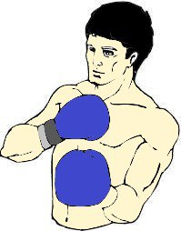
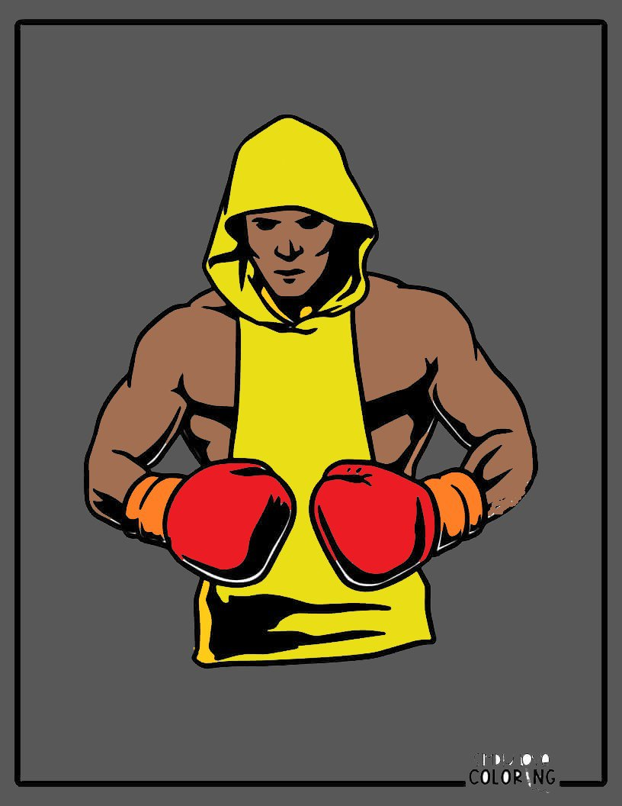
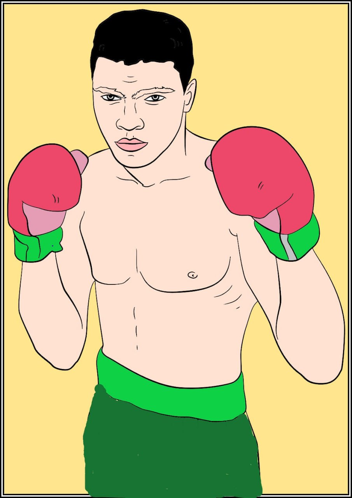

Володимир Кличко
Статистика
- Повне ім'я: Володимир Володимирович Кличко
- Прізвисько: Сталевий Кулак
- Вагова категорія: Важка вага
- Зріст: 198 см
- Розмах рук: 206 см
- Рекорд: 64-5 (53 KO)
Досягнення
- Абсолютний чемпіон світу у важкій вазі
- Чемпіон за версіями WBA, IBF, WBO, IBO
- Найтриваліший володар титулів у важкій вазі
- Доктор філософії з спортивних наук
- Рекордсмен за кількістю перемог у титульних боях
Біографія
Володимир Кличко народився 25 березня 1976 року в Семипалатинську, Казахстан. Разом з братом Віталієм створив найуспішнішу братську пару в історії боксу. Володів титулами чемпіона світу понад 12 років.
Відомий своєю феноменальною джебом та інтелектуальним підходом до боксу. Завершив кар'єру в 2017 році, провівши один з найкращих боїв проти Ентоні Джошуа.


